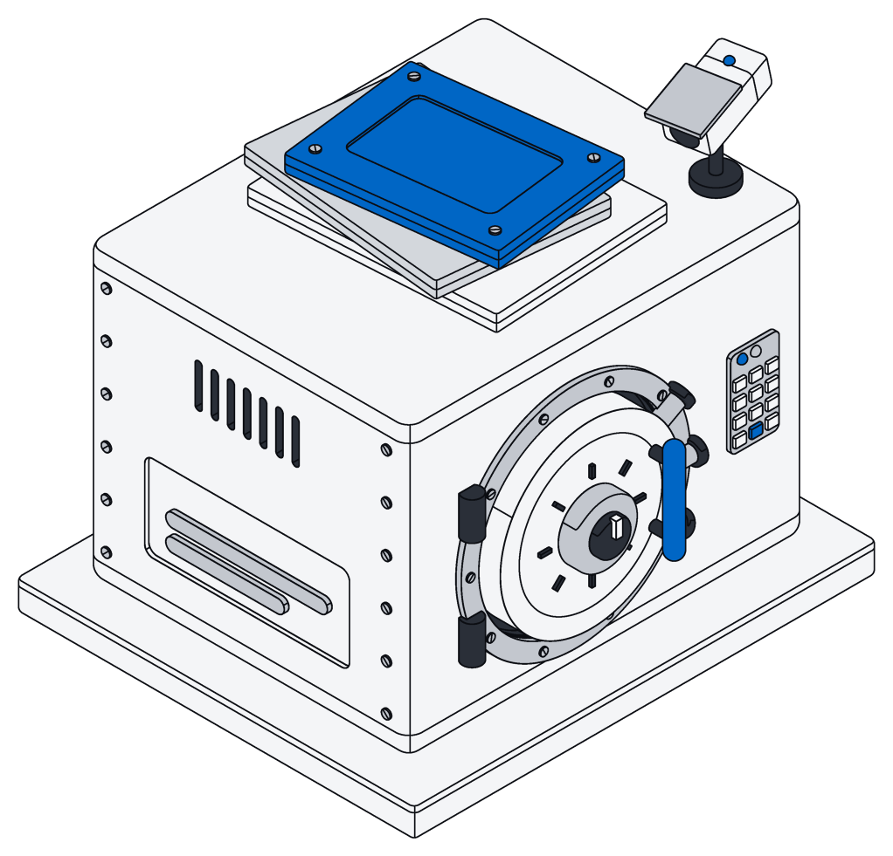
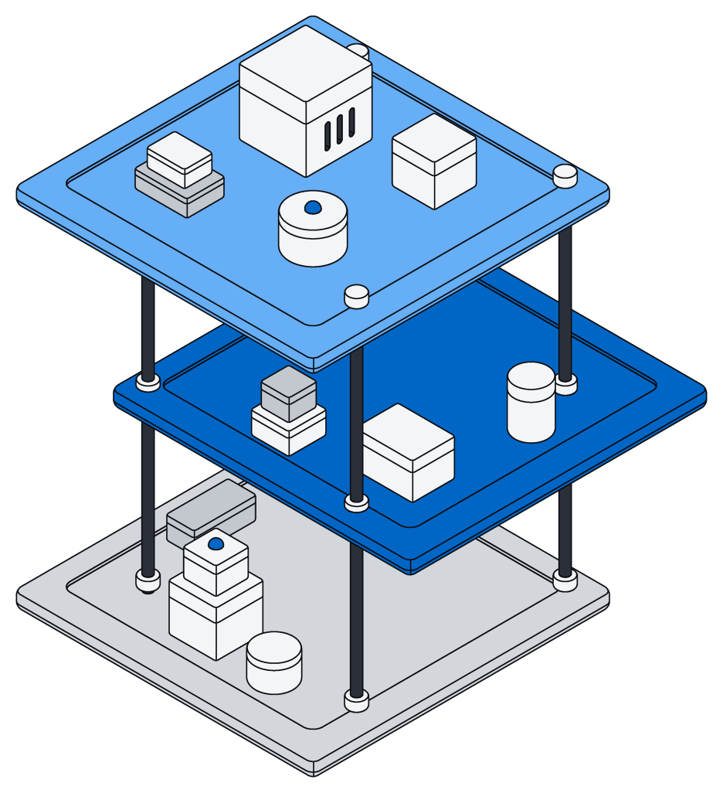
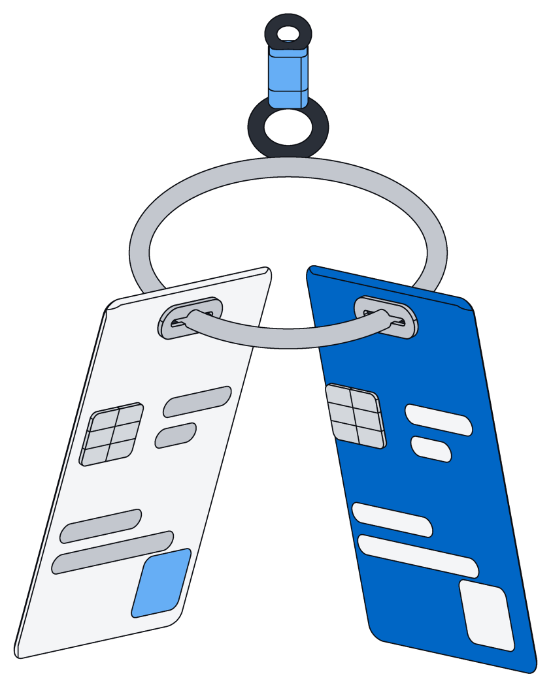
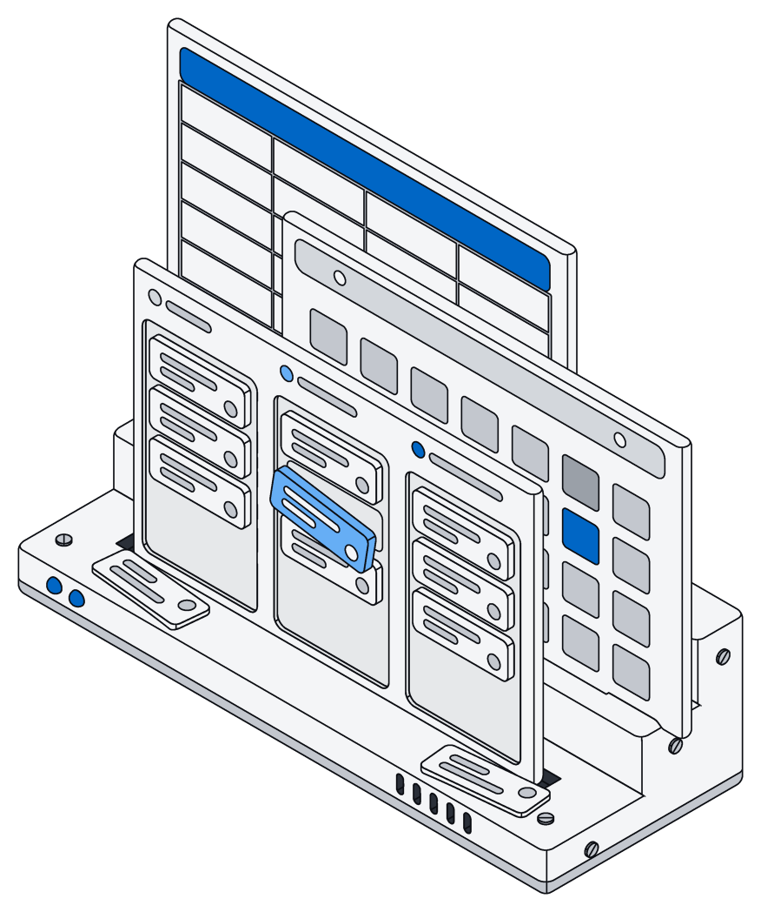
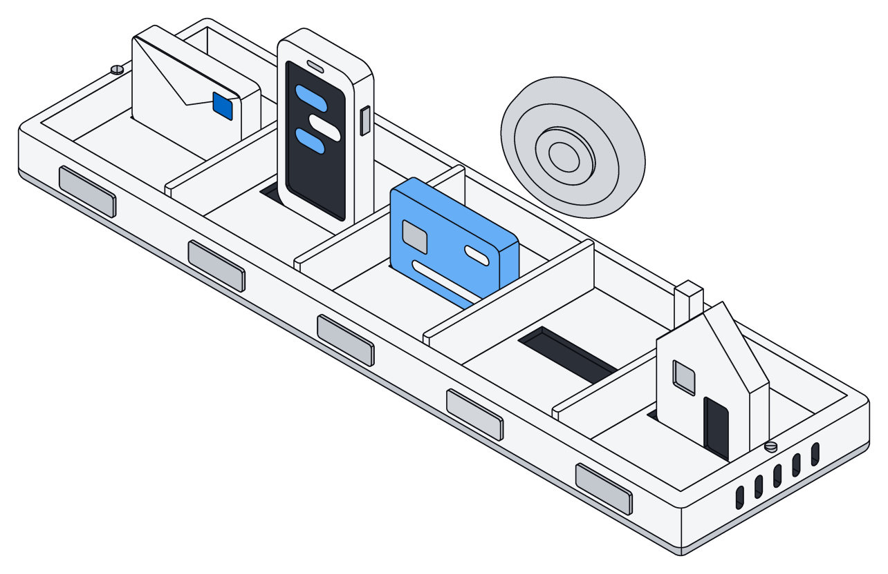
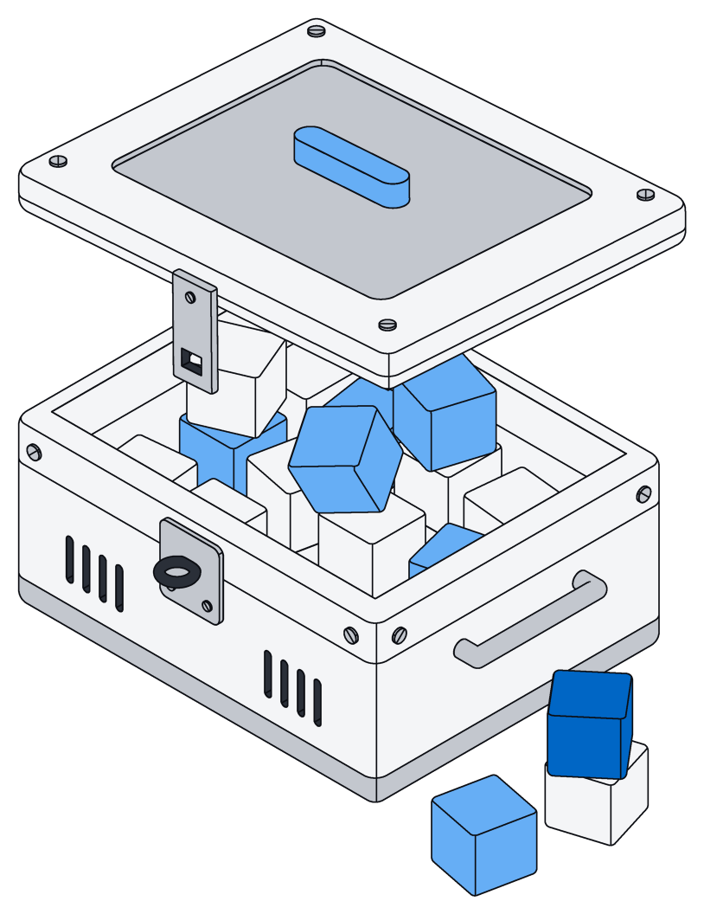
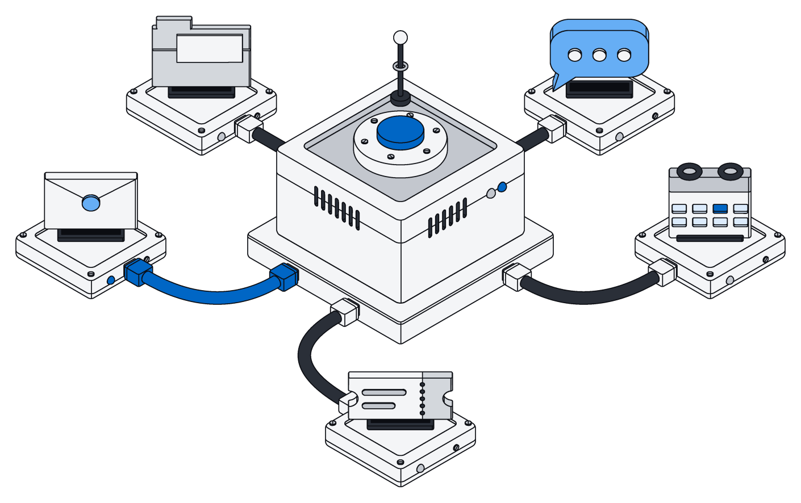
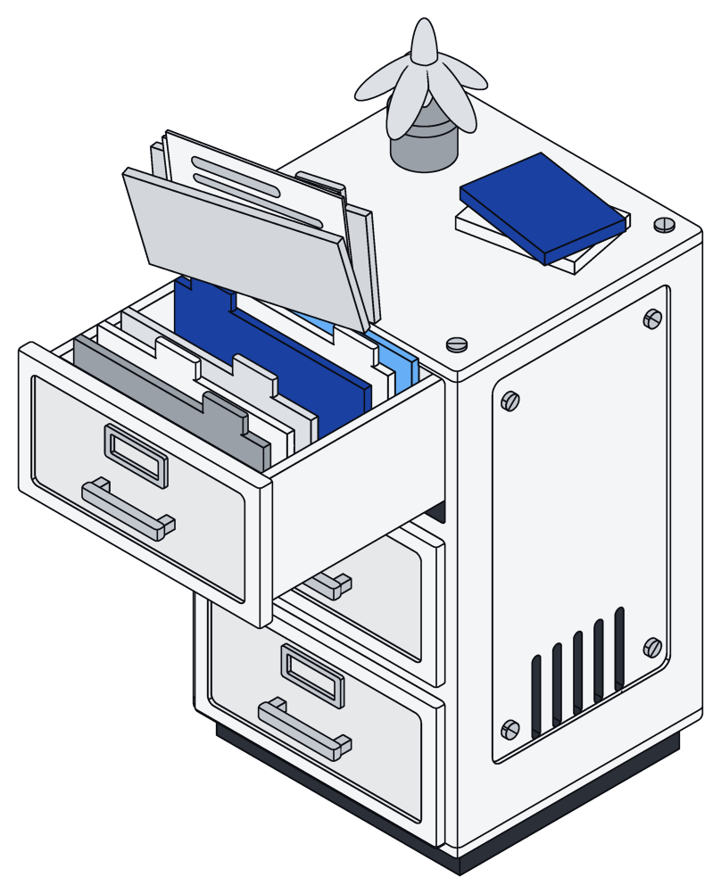

Only the right people see it.
Everything you store lives in a space, and only the people you let in can see it. The same rules hold for the app, your own tools and every AI assistant.

Everything lives in a space.
Everyone gets a private space, and you can make shared ones for a team, a client or a household.
Everything you add belongs to exactly one space, your own unless you pick another.

Every key answers to a person.
Each access key belongs to one person and can only do less than they can: fewer spaces, less say, an end date.
Lower someone's access and their keys follow right away.

Checked on every request.
The rules live at the core of Archive, not on a screen, so a bug in one place cannot show someone else's information.
Every list, board, search and assistant sees exactly what you are allowed to see.

Secret fields stay sealed.
Card numbers, Social Security numbers, national IDs and passports are encrypted before they are stored, and everyone sees only the last few digits.
An admin decides who may see the real number.

Rules you can read.
Your security rules sit right next to your records, written down where anyone on your team can check them. Take your setup with you and the rules come along.
CREATE TABLE person ( id uuid PRIMARY KEY DEFAULT uuidv7(), space uuid NOT NULL REFERENCES archive.space, created_at timestamptz NOT NULL DEFAULT now(), updated_at timestamptz NOT NULL DEFAULT now(), name text NOT NULL, email archive.email, ssn archive.us_ssn, search tsvector GENERATED ALWAYS AS (archive.search_doc(name, email)) STORED ); ALTER TABLE person ENABLE ROW LEVEL SECURITY; ALTER TABLE person FORCE ROW LEVEL SECURITY; CREATE POLICY viewer ON person FOR SELECT USING (space = ANY (archive.my_spaces())); CREATE POLICY editor ON person USING (space = ANY (archive.my_spaces('editor'))) WITH CHECK (space = ANY (archive.my_spaces('editor')));
const [ana] = await archive.list("person", { where: { email: "ana@acme.com" } }) ana.ssn // "***-**-4821" for everyone const full = await archive.get("person", ana.id, { reveal: true }) return full.ssn // the real number, only if you are granted us_ssn
# let Ana's manager read SSNs archive secret grant sam@acme.com us_ssn # a token for an intake agent: one space, editor, 30 days archive token create -name intake-agent -space clients:editor -expires 720h # give a contractor read-only access archive space grant clients lee@contractor.com viewer
Four levels of access.
Each level includes everything below it. Access is set per space, so you can own one and only view another.
| Level | What they can do in the space |
|---|---|
| viewer | Browse, open and search records and files, read pages and documents, and open boards, calendars and lists. |
| editor | Everything a viewer can, plus add, change and remove records and files, and edit pages and Office documents. |
| admin | Everything an editor can, plus add, change and remove members below owner, and change how the space's information is organized. |
| owner | Everything an admin can, plus add or remove owners and delete the space with everything in it. A space always keeps at least one owner. |
Sign in without a password.
Use an email link, a passkey, or your Google or Microsoft account. However you sign in, you get the same access.
Safe to hand to an assistant.
Assistants, connected tools and share links follow the same rules as people. Nothing gets a side door.

Assistants act as you
- They see and change only what you could
- If a job fails partway, nothing is saved
- No internet access, and a time limit on every job

Connectors only read
- They only ask to read, and never write back
- Each connection belongs to one space
- Their sign-in details are encrypted like secret fields

Files leave carefully
- Share links expire after a day, or sooner
- Photos shared by link lose their location data
- Files follow the same rules as their space
Questions teams ask.
The short answers. The docs have the rest.
Can a technical user get around the rules?
No. The rules live at the core of Archive, so even someone working directly with the data only sees the spaces they belong to.
What can an assistant see?
Exactly what its access key allows. It acts as the person who connected it, narrowed to the key's spaces, access level and end date.
Can an assistant leave a half-finished change behind?
No. Every job is all or nothing, so if anything goes wrong, every change is undone.
Do connectors change anything in my mail or CRM?
No. Connectors only ask to read and never write back. What they bring in lands in one space, under that space's rules.
Who can see a card number or a Social Security number?
Only people an admin has allowed, and only in spaces they can already see. Everyone else sees just the last few digits.
How do I share a file outside Archive?
Make a share link. It expires after a day, or sooner if you choose, and photos shared through it have their location data removed.
Share the workspace, not the data.
Private by default, shared on purpose.